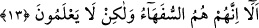

Madem ki o köpek seni avlamaya çalışır,
Açıkça anlaşılmıştır ki, sen artık o köpeğin avı olmuşsun.
13. Onlara: İnsanların îmân ettiği gibi siz de îmân edin, denildiği vakit “Biz hiç,
sefîhlerin (akılsız ve ahmak kişilerin) îmân ettikleri gibi îmân eder miyiz!” derler.
Biliniz ki, sefîhler ancak kendileridir. Fakat bunu bilmezler (veya bilmezlikten
gelirler).
Mü’minler, münâfıkları bozgunculuk yapmaktan sakındırmanın ardından irşâd ve
nasîhatı tamamlamak üzere böyle demişlerdi. Çünkü îmân ancak “yeryüzünde
bozgunculuk yapmayın” âyetiyle kasdolunan gereksiz şeylerden yüz çevirmek ve
“îmân ediniz” emriyle istenilen, gerekli şeyleri yapmakla kemâle erer.
Âyette “inanınız” diye emredilmiş fakat neye inanılacağı belirtilmemiştir. Zira hangi
şeylere inanılması gerektiği açıktır. Bunlar Allah, âhıret günü ve inanılması gereken
diğer şeylerdir. Veya “îmânı işleyiniz” denmek istenmiştir. İşte mü’minler münâfıklara
“siz de insanların îmânlarına benzer şekilde îmâna sâhib olunuz veya onlar îmânlarını
nasıl tahkîke ulaştırdılarsa siz de o şekilde îmânlarınızı tahkîke ulaştırınız.”
demişlerdir.
Âyette geçen “insanlar” dan maksad, insanlıkta kemâle ermiş ve aklın gerektirdiği
tarzda amel yapan kimselerdir. Veya Hz. Peygamber (a.s.) ve onunla beraber olanlardır.
Ya da bunlardan kasdolunan Abdullah ibn Selâm ve arkadaşları gibi kendi içlerinden
îmân eden kimselerdir. Âyette murâd edilen mânâ şudur: Münâfıklara “Siz de, sizden
olan bu kimseler gibi nifak şâibelerinden uzak ve ihlâsa bitişik bir tarzda îmân ediniz.”
denilince; kendilerine yapılan emr bi’l-ma’rûf ve nehy ani’l-münkere karşı çıkarak o
vakûr ve kâmil mü’minleri, sâhib oldukları sıfatların zıddı ile vasfederek “yâni
beyinsizlerin inandığı gibi mi inanalım?” derler. Münâfıkların “beyinsizler” diye
niteledikleri kimseler genel anlamda kâmil insanlar veya belli şahıslardır. Veya tüm
beyinsiz takımıdır. Buna göre münâfıklar bozuk anlayışlarının bir gereği olarak
mü’minleri gerçekten beyinsiz saymaktadırlar.
“Sefeh”; hafîf akıllılık ve zayıf görüşlülük demektir. Her ikisi de aklın noksanlığından
kaynaklanır. Bunun mukabili ise “gerçekten akıllı” olmaktır.
Münâfıklar, sefâhet ve sapıklığa gömülmüş olduklarından ve kendi amellerini güzel
gördüklerinden dolayı olgunluk ve vakarın zirvesinde olan mü’minleri beyinsizler
olarak nitelemişlerdir. Şurası açıktır ki sapıklığı hidâyet sanan kimse, hidâyeti de
sapıklık sanır. Münâfıkların böyle demeleri; mü’minlerden birçoğunun fakir ve çaresiz
kimseler olmaları sebebiyledir. Onların durumlarını küçümsemek için de olabilir. Onlar